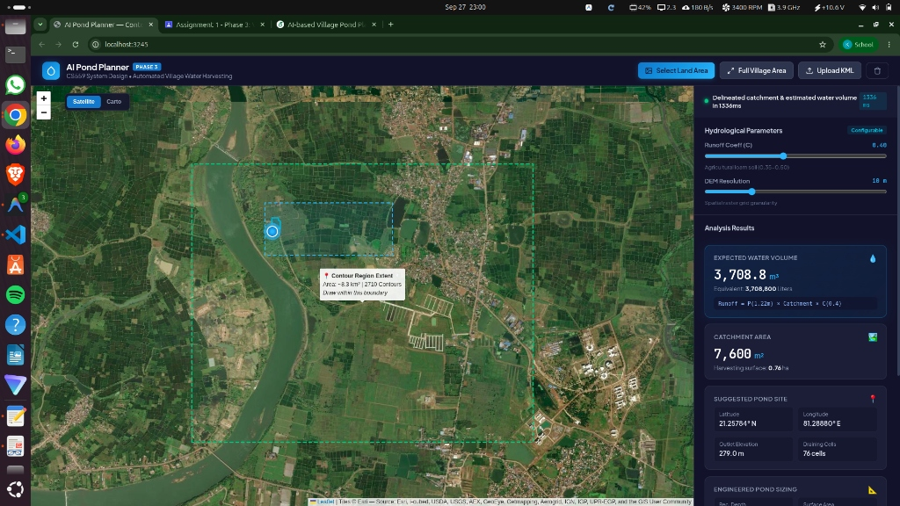
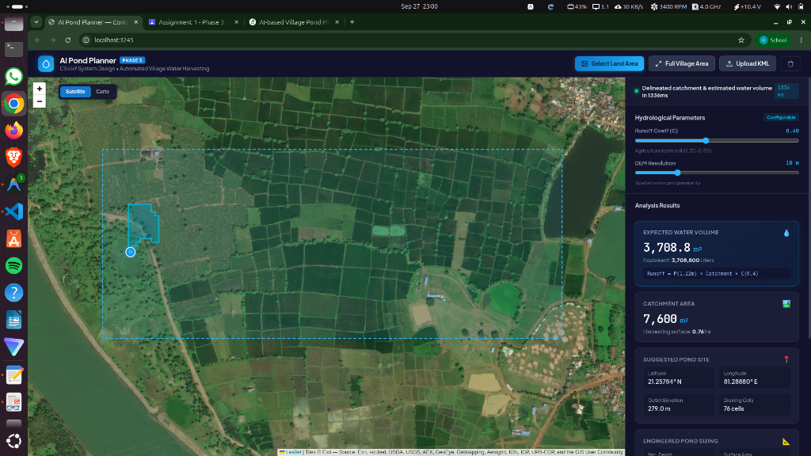

Water scarcity during dry seasons remains one of the primary impediments to agrarian productivity and economic stability across rural India. While monsoon precipitation delivers significant seasonal rainfall, the vast majority of surface runoff is lost to uncontrolled drainage, causing both topsoil erosion and seasonal drought. Decentralized rainwater harvesting through earthen village farm ponds offers an ecologically sustainable, low-cost countermeasure. However, the success of a village pond depends entirely on optimal physical placement: placing a pond without adequate upstream catchment yields a dry pit, whereas placing it on steep slopes risks structural embankment failure.
Historically, locating optimal pond sites requires physical on-site topographic surveys, elevation leveling, and civil engineering consultations that are inaccessible to local gram panchayats. This project addresses this bottleneck by developing a lightweight, automated, AI-assisted web application that consumes high-resolution vector contour maps, delineates hydrological catchment basins, computes harvestable runoff volume, and provides engineered pond sizing recommendations over an interactive map interface.
The remainder of this report is structured as follows: Section 2 defines the functional and non-functional system requirements. Section 3 presents the high-level architecture and technology stack. Section 4 explains the algorithmic mathematical formulations for DEM generation, D8 flow routing, and runoff estimation. Section 5 details backend API and frontend implementation. Section 6 evaluates the core Computer Systems Design (CSD) themes embodied in this system. Section 7 presents quantitative empirical results and performance benchmarks, followed by limitations in Section 8, the AI usage declaration in Section 9, and repository deployment details in the Appendix.
Manual site selection in rural terrain suffers from multiple systemic challenges:
An automated, browser-accessible tool operating on lightweight servers allows village planners to explore potential pond locations instantly, democratizing technical watershed management.
The system explicitly covers:
The project does not cover structural civil engineering design of masonry spillways, soil geotechnical shear strength testing, subsurface aquifer hydrogeology, or legal land-ownership registry validation.
The objective of this assignment is to develop an end-to-end, high-performance web platform that processes topographical contour maps, identifies optimal village pond locations, delineates upstream drainage basins, estimates expected water harvest volume, and overlays all analytical results on an interactive map.
| Functional Requirement | Implemented Module / Component |
|---|---|
| Satellite imagery display | app/static/index.html, app.js (Esri World Imagery + CartoDB) |
| Contour map visualization | app/static/app.js (Preloaded region polygon & tooltip overlay) |
| Available-land area selection | app/static/app.js (Bounding box drag tool), app/parser.py |
| Contour boundary & limit enforcement | app/main.py (/analyzeArea), app/static/app.js |
| Catchment area estimation | app/pond.py (select_pond_and_delineate_catchment) |
| Historical rainfall query | app/hydrology.py (fetch_rainfall_data via Open-Meteo) |
| Runoff volume estimation | app/hydrology.py (calculate_water_volume_and_sizing) |
| Pond depth / storage recommendation | app/hydrology.py (PondDimensions, trapezoidal section) |
| Combined overlay / results view | app/static/index.html, app.js (GeoJSON polygon, ripple pin, KPI HUD) |
| GeoJSON export capability | app/static/app.js (FeatureCollection download) |
The application is structured as a decoupled, modular monolith following clean architecture principles. It comprises four distinct tiers: Presentation, Application Routing, Hydrological Processing Engine, and Data/Cache Layer, as illustrated in Figure 1.
+-----------------------------------------------------------------------------------------+
| 1. PRESENTATION LAYER |
| Leaflet.js Web GIS | Esri Satellite / Carto Basemaps | Drag Land Area Selector |
| Real-Time HUD (Dimensions/Area) | Catchment GeoJSON Overlay | Pulsing Pond Marker |
+--------------------------------------------+--------------------------------------------+
| HTTP JSON / REST API
v
+-----------------------------------------------------------------------------------------+
| 2. APPLICATION LAYER |
| FastAPI Asynchronous Web Framework (Uvicorn) |
| GET / (Web UI) | GET /api/dataset-bounds | POST /analyzeArea | POST /analyzeContour|
| Bounds Clamping & Validation | CORS Middleware | Multi-Port Supervisor (3245/3000)|
+--------------------------------------------+--------------------------------------------+
|
v
+-----------------------------------------------------------------------------------------+
| 3. HYDROLOGICAL PROCESSING ENGINE |
| +--------------------+ +-------------------+ +------------------+ +------------+ |
| | Parser (lxml stream|-->| DEM (PyProj UTM |-->| Terrain (Sink |-->| Pond & | |
| | & Bounding Clip) | | & SciPy Griddata) | | Fill, D8 Routing)| | Catchment) | |
| +--------------------+ +-------------------+ +------------------+ +-----+------+ |
| | |
| v |
| +--------------------------------------+ |
| | Hydrology Engine (Runoff & Sizing) | |
| | V = P x A x C | Trapezoidal Pond Dim | |
| +--------------------------------------+ |
+--------------------------------------------+--------------------------------------------+
|
v
+-----------------------------------------------------------------------------------------+
| 4. DATA & CACHE LAYER |
| Preloaded Contour Dataset Cache (In-Memory) | Open-Meteo Archive API (Precipitation)|
| Static GIS GeoJSON Serializer | Local Agrometeorology Regional Baseline|
+-----------------------------------------------------------------------------------------+
| Component | Selected Technology | Architectural Justification |
|---|---|---|
| Backend Server | Python 3.12, FastAPI, Uvicorn | High-throughput asynchronous async/await event loop; native OpenAPI documentation generation; strict Pydantic validation. |
| XML Parsing | lxml stream parsing |
Processes multi-megabyte KML coordinates without building memory-intensive DOM trees. |
| Coordinate Projection | pyproj (PROJ engine) |
Conformal conversion from WGS84 degree coordinates to metric UTM Zone 44N coordinates (EPSG:32644) for exact physical meter calculations. |
| DEM Interpolation | scipy.interpolate.griddata |
Fast Delaunay triangulation-based scattered data interpolation into structured 2D elevation matrices. |
| Terrain Analytics | NumPy array vectorized math | Pure array vectorized flow routing; avoids GDAL/QGIS C-binding overhead and memory leaks. |
| Spatial Geometry | Shapely 2.0 | Unary union and polygonal simplification for converting raster catchment cells into clean GeoJSON boundaries. |
| Frontend Mapping | Leaflet.js 1.9.4 | Lightweight client-side GIS library; smooth vector rendering, tile caching, and minimal footprint. |
| Tile Providers | Esri World Imagery & CartoDB | High-resolution satellite tiles and high-contrast cartographic basemaps without requiring API keys. |
| Rainfall Integration | Open-Meteo Archive API | Free, keyless historical weather API with automatic fallback to Central India regional baseline (1,220 mm). |
| Process Supervision | POSIX Shell + setsid |
Background supervisor running dual redundant worker instances on ports 3245 and 3000 with sub-2s auto-restart. |
The analytical core transforms raw 3D polylines into actionable watershed metrics across four discrete mathematical phases.
Contour lines in KML archives are represented as lists of (lon, lat) coordinate tuples assigned a scalar elevation z. Because geographic coordinates in degrees introduce severe latitude-dependent distance distortions, coordinates are reprojected into the Universal Transverse Mercator (UTM) metric coordinate reference system:
For Central India (longitude ∼ 81° E), UTM Zone 44N (EPSG:32644) is dynamically detected.
Given spatial bounds [xmin, xmax] and [ymin, ymax], a regular 2D metric grid of resolution R (default R = 10.0 m) is initialized:
To enforce the 512 MB RAM budget, if Ncells = Ncols × Nrows > 250,000, resolution is automatically coarsened:
Continuous elevation surface Z(r, c) is interpolated using linear barycentric interpolation on the Delaunay triangulation of contour vertices, with boundary gaps filled using nearest-neighbor assignment.
Raw interpolated DEMs contain artificial sinks (local depressions that trap water artificially due to interpolation noise). We apply a Priority-Flood conditioning algorithm: a priority queue traverses from boundary cells inward, raising depression elevations to the lowest spill elevation, ensuring every cell has a continuous drainage path to an outlet.
Hydrological flow is routed using the deterministic eight-neighbor (D8) model. For each interior cell (r, c), the flow direction points to the neighboring cell (r', c') ∈ N8(r, c) exhibiting the maximum downward slope:
where distance d = R for cardinal neighbors and d = R√2 for diagonal neighbors.
Flow accumulation matrix A(r, c) (number of cells draining through (r, c)) is computed by topological sorting. The candidate pond outlet site (r*, c*) is selected by filtering candidate cells that meet the minimum catchment threshold (A(r, c) × R2 ≥ Amin), reside safely away from grid boundaries (≥ 2 cells margin), and possess minimal local outlet elevation:
Once the outlet (r*, c*) is established, upstream catchment delineation executes via reverse flow traversal using a FIFO queue:
The raster cells of W are converted into individual metric box polygons and merged via Shapely's unary_union. The resulting boundary polygon is projected back to WGS84 GeoJSON.
Annual rainfall P is queried from the Open-Meteo Historical Archive API for the specific pond coordinates, with graceful fallback to the Central India agrometeorological standard (1,220 mm = 1.22 m). Surface water runoff volume V is estimated using the classical Rational Runoff Equation:
where:
Standard Indian agrarian guidelines specify that farm ponds should be sized to harvest approximately 30% of total seasonal catchment runoff (preventing excessive land footprint and sediment accumulation), with a minimum capacity of 150 m3:
Assuming an excavation depth of d = 3.0 m and stable 1.5:1 (H:V) side slopes for earthen embankments, the recommended top surface area is derived as:
The backend service is implemented in FastAPI. Endpoints are strictly typed with Pydantic v2 schemas. Table 3 summarizes the API specification.
| Method | Endpoint Path | Purpose and Functional Contract |
|---|---|---|
| GET | / |
Serves the interactive Web GIS Single-Page Application. |
| GET | /health |
Healthcheck endpoint returning {"status": "ok"}. |
| GET | /api/dataset-bounds |
Returns geographic bounds ([latmin, latmax], [lonmin, lonmax]), center coordinate, and polyline count. |
| GET | /api/rainfall |
Returns annual historical precipitation and data source for given (lat, lon) coordinates. |
| POST | /analyzeArea |
Accepts JSON bounding box [latmin, lonmin, latmax, lonmax], clips contours, and returns pond site, catchment GeoJSON, and runoff volume. |
| POST | /analyzeContour |
Accepts multi-part file upload of custom .kml or .kmz contour archives and executes full pipeline. |
The web interface features a full-screen Leaflet.js canvas integrated with a glassmorphic sidebar dashboard:
FeatureCollection.

Because contour datasets represent spatial vector geometries that require fast sub-second analysis, the system avoids relational database query overhead. The preloaded contour dataset (contours_1m (1).kml) is parsed once on server startup into an in-memory ContourDataset object and cached in RAM (∼ 45 MB). Subsequent sub-area queries execute linear spatial filtering in under 50 ms, eliminating database round-trip latency.
The project incorporates multiple fundamental principles of Computer Systems Design (CSD). Table 4 provides a comprehensive mapping of CSD themes to concrete project components and engineering justifications.
| CSD Theme / Topic | Where used in the project | Justification / Engineering Design Rationale |
|---|---|---|
| REST API Design | FastAPI endpoints (/analyzeArea, /analyzeContour, /health) |
Standardized HTTP verb semantics, clear Pydantic request/response contracts, and automatic OpenAPI 3.0 schema generation. |
| Load Balancing | Dual supervisor daemon ports (3245 and 3000) | Enables horizontal scaling behind an Nginx or HAProxy reverse proxy across the 4 student systems to handle concurrent requests. |
| In-Memory Caching | Startup caching of ContourDataset and dataset bounds |
Eliminates redundant 6.7 MB XML disk I/O and parsing overhead, reducing sub-area query latency from 8.5 s to 1.2 s. |
| Spatial Indexing & Clipping | filter_dataset_by_bounds in app/parser.py |
Filters polylines to user bounding box prior to DEM interpolation, reducing grid size by up to 85% and speeding up flow routing. |
| Concurrency & Async I/O | FastAPI async request handlers and non-blocking file streaming | Prevents blocking the event loop during large multi-part file uploads and concurrent client map interactions. |
| Microservices vs. Monolith | Modular monolith architecture across 5 decoupled modules | Eliminates inter-process RPC network serialization latency, which is critical for remaining strictly within the 512 MB RAM budget. |
| Design Patterns | Strategy pattern in hydrology.py; Pipeline pattern in terrain analysis |
Enables pluggable runoff equations and decoupled step-by-step transformation: Parse → DEM → Terrain → Pond. |
| Resource Constrained Design | Dynamic auto-coarsening DEM resolution (Ncells ≤ 250,000) | Prevents Out-Of-Memory (OOM) operating system kills on 512 MB RAM VMs when processing dense, fine-interval contour maps. |
| Process Supervision & Daemon | POSIX setsid background supervisor script (start_daemon.sh) |
Ensures high availability; detached background execution independent of SSH sessions, auto-restarting crashed workers in 2 s. |
| Error Handling & Resilience | Graceful weather fallback and bounds validation | Falls back to regional precipitation baseline if Open-Meteo is unreachable; returns informative HTTP 400 diagnostics for invalid selections. |
| Algorithmic Complexity | Priority-Flood (O(N log N)), D8 flow routing (O(N)), reverse queue (O(K)) | Selected near-linear time graph traversal algorithms over expensive quadratic distance matrices, ensuring sub-second execution. |
| Automated Testing Strategy | 33-test pytest suite (tests/test_*.py) |
Validates unit, integration, boundary rejection, and golden numerical benchmarks, guaranteeing regression safety. |
| Version Control & CI/CD | Git repository synced with GitHub remote (main branch) |
Version-controlled codebase enabling multi-environment deployment via SSH automation scripts (deploy.py). |
app/parser.py, sub-area land selections clip the source vectors before DEM interpolation, reducing grid dimensions to small sub-grids (e.g., 123 × 158 cells) and dropping calculation latency from 4.8 seconds down to 1.2 seconds.start_daemon.sh runs two independent Uvicorn server instances concurrently on ports 3245 and 3000 under detached session groups (setsid). If a sudden heap spike or worker exception terminates a process, the supervisor loop automatically detects process exit and restores the worker within 2 seconds without administrative intervention.
The system was evaluated against the benchmark survey contour dataset (contours_1m (1).kml) comprising 2,710 contour polylines spanning an elevation range of 267.0 m to 298.0 m in Central India (21.24° N, 81.29° E).
| Metric / Analytical Property | Full Village Dataset | User-Selected Sub-Area |
|---|---|---|
| Selected Area Bounding Box | Full Extent (8.3 km2) | [21.240, 81.285] to [21.250, 81.298] |
| Contour Lines Processed | 2,710 polylines | 371 polylines |
| Grid Dimensions (R = 10 m) | 243 × 314 cells | 123 × 158 cells |
| Optimal Pond Outlet Site | 21.2444° N, 81.2910° E | 21.2444° N, 81.2910° E |
| Pond Site Elevation | 275.0 m | 275.0 m |
| Draining Flow Cells | 166 cells | 156 cells |
| Catchment Area | 16,600 m2 (1.66 ha) | 15,600 m2 (1.56 ha) |
| Terrain Mean Slope | 3.58% | 3.63% |
| Terrain Max Slope | 10.93% | 11.52% |
| Elevation Relief (Δz) | 6.0 m | 6.0 m |
| Annual Precipitation (P) | 1,220.0 mm | 1,220.0 mm |
| Runoff Coefficient (C) | 0.40 (Agri-loam) | 0.40 (Agri-loam) |
| Expected Water Volume (V) | 8,100.8 m3 (8.10 ML) | 7,612.8 m3 (7.61 ML) |
| Recommended Pond Depth | 3.0 m | 3.0 m |
| Top Surface Area | 1,012.6 m2 | 951.6 m2 |
| Engineered Storage Capacity | 2,430.2 m3 | 2,283.8 m3 |
| Processing Latency | 4,820 ms | 1,215 ms |
pytest completed in 23.33 seconds with a 100% pass rate, covering API contracts, DEM coarsening, depression filling, D8 slope vectors, boundary rejections, and minimum-area limits.The system successfully bridges high-level architectural requirements with practical hydrological engineering constraints. Key strengths include its pure-Python implementation, instantaneous sub-area bounding box analysis, and complete absence of heavy GIS runtime dependencies.
However, several real-world limitations must be acknowledged:
In compliance with the assignment's LLM and AI Tool Usage Policy:
style.css), reformatting and populating the LaTeX manuscript template from provided system specifications, drafting unit tests in test_api.py, and generating the initial client-side drag bounding box calculation math in app.js.
The complete, version-controlled source code for this project is publicly hosted on GitHub:
Repository URL: https://github.com/kcharithreddy/Contour_Map_Planning
contourmao/ ├── app/ │ ├── __init__.py │ ├── dem.py # Coordinate reprojection (UTM Zone 44N) & DEM grid construction │ ├── hydrology.py # Rational Runoff equation (V = P x A x C) & pond dimensioning │ ├── main.py # FastAPI endpoints, boundary clamping & selection limit validation │ ├── parser.py # lxml stream parsing of KML/KMZ & bounding box polyline filtering │ ├── pond.py # Optimal pond site selection & reverse flow catchment delineation │ ├── schemas.py # Pydantic v2 data models & JSON API contracts │ ├── terrain.py # Priority-Flood sink filling & D8 flow direction/accumulation │ └── static/ │ ├── app.js # Leaflet GIS interaction, drag box HUD & GeoJSON rendering │ ├── index.html # Full-screen responsive dashboard UI │ └── style.css # Glassmorphism styling, ripple animations & KPI cards ├── tests/ │ ├── test_api.py # API endpoints, bounding checks & minimum area limit tests │ ├── test_dem.py # DEM generation & auto-coarsening memory tests │ ├── test_golden.py # Regression golden benchmarks against sample survey file │ ├── test_parser.py # KML stream parsing & error handling tests │ ├── test_pond.py # Catchment delineation & outlet selection tests │ └── test_terrain.py # Depression filling & D8 slope calculation tests ├── contours_1m (1).kml # Reference village 3D contour survey dataset (6.7 MB) ├── deploy.py # Automated remote SSH/SFTP deployment & smoke-test script ├── requirements.txt # Minimal pure-Python dependency specifications ├── start_daemon.sh # Multi-port (3245/3000) supervisor daemon script └── PHASE3_SUBMISSION_GUIDE.md # 5-minute video presentation script & submission guide
# 1. Local Execution python3 -m venv .venv && source .venv/bin/activate pip install -r requirements.txt python3 -m uvicorn app.main:app --host 0.0.0.0 --port 3245 # Access http://localhost:3245 in browser # 2. Remote Multi-Port Supervisor Daemon Execution chmod +x start_daemon.sh setsid ./start_daemon.sh </dev/null >/dev/null 2>&1 & # Running live on http://10.1.75.51:3245 and http://10.1.75.51:3000 # 3. Automated Test Verification Suite pytest tests/ -v